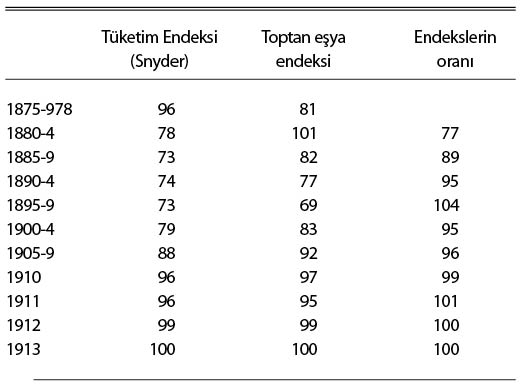

\1
IV. Bölüm
Paranın Satın Alma Gücü
I. Satın Alma Gücünün Anlamı
Bir kimse, parayı para olduğu için değil, fakat paranın –satın alabilecekleri demek olan– satın alma gücü için tutar. Dolayısıyla, o kimsenin talebi, öyle bir paranın birimlerine değil, satın alma gücü birimlerine yöneliktir. Öte yandan, genel satın alma gücünü elde tutmanın para biçiminden başka yolu olmaması nedeniyle, o kimsenin satın alma gücü talebi, “eşdeğer” miktardaki paraya olan talebi olarak dile gelir. Peki, para birimleri ve satın alma gücü birimleri arasındaki “eşdeğerliğin” ölçüsü nedir?
Paranın belli bir durumdaki satın alma gücü, bir birim parayla alınacak mal ve hizmet miktarına dayandığı için, değişik malların ve hizmetlerin tek tek harcama kalemleri olarak önemlerini yansıtan paylarının oluşturduğu bileşik malın (composite commodity) fiyatıyla ölçülebilmesine imkân verir. Ayrıca, her biri uygun bir bileşik mala karşılık gelen ve çeşitli durumlarda ilgi alanımıza girebilecek daha pek çok harcama türü ve maksadı vardır. Belli bir harcama türünün temsilcisi olan bir bileşik malın fiyatına fiyat düzeyi ve belli bir fiyat düzeyindeki değişimlerin göstergesi olan sayı dizilerine de endeks diyeceğiz. Bu da, belli bir durumda birim satın alma gücünün “eşdeğeri” olan birim para adedinin, mukabil fiyat düzeyine bağlı olacağı ve uygun endeks değerinde görüneceği anlamına gelir.
Söz konusu fiyat düzeyleri içinde, paranın satın alma gücü ile ifade edilene par excellence (mükemmel) uyan bir tanesi var mıdır ve varsa hangisidir? Bu sorunun yanıtı konusunda tereddüde düşmemiz gerekmez. Paranın satın alma gücündeki değişiklikleri ölçmenin teorik ve pratik güçlükleri ne kadar büyük olursa olsun, satın alma gücünün anlamı konusunda herhangi bir kuşkuya yer yoktur. Paranın satın alma gücüyle kast edilen, paranın, belli bir toplumdaki bireylerin tüketim amacıyla parasal gelirlerini sarf ettikleri mal ve hizmetleri satın alma gücüdür.1 Bu da demektir ki satın alma gücü, o mal ve hizmetlerin, bir birim paranın satın alacağı tüketim nesneleri olarak, önemlerine göre ağırlıklandırılmış miktarlarıyla ölçülür; ilgili endeks değeri de bazen tüketim endeksi olarak belirlenen türe aittir. Buradan anlaşılacağı üzere, satın alma gücü, belli bir durumdaki belli bireyler grubuna, yani aktüel tüketimleri standardımıza esas olanlara referansla tanımlanmak zorundadır ve bu referans olmadan anlamı açık değildir.
Bu, muhtelif amaçlar ve araştırmalar için faydası ve önemi büyük olan başka türden bileşik malların, fiyat düzeylerinin ve fiyat endeks değerlerinin olmadığı anlamına gelmez. Tersine, münferit mal fiyatlarının birbirlerine göre dalgalanması gibi, birbirine göre dalgalanan fiyat düzeylerinin çeşitliliği fikri, para kuramını kavramak açısından çok yararlıdır. Bununla birlikte farklı bağlamlara ve amaçlara uygun, çoğu kez ikincil denilen başkaca fiyat düzeylerinin varlığı, satın alma gücünün anlamı konusunda herhangi bir muğlâklığa düşmek için gerekçe değildir.
Hesap parası (money of account) –birinci bölüme onunla başlamıştık– çok zaman önce, genel satın alma gücünü de ifade eden bir terim ihtiyacını karşılayacak şekilde ortaya çıkmıştı. Öte yandan fiyat endeksi değerleri cinsinden bir ölçü olarak satın alma gücü, modern zamanların kavramıdır. Endeks değerlerinin kısa bir tarihçesi, Profesör Irving Fisher’ın The Making of Index Numbers (Endeks Sayılarının Hazırlanışı) adlı kitabının dört numaralı ekinde verilmektedir. Bence buna bir de, satın alma gücü kavramının ve satın alma gücündeki değişim ölçümlerinin ilk defa zamanımızdakine benzer şekilde ele alındığı, Edgeworth tarafından “endeks değerleri hakkında en eski inceleme ve en iyilerinden biri” olarak nitelendirilen, Piskopos Fleetwood’a ait 1706 tarihli Chronicon Preciosum (Kıymet Vakayinamesi) adlı eseri eklemek gerekir (özellikle Bölüm IV’ün ilk kısmı ve Bölüm V). Şu alıntı Piskoposun yaklaşım tarzını gösterir: “Paranın, hayatın gereklerini ve sunduklarını almaktan başka bir kullanımı olmadığı için, H. VI (VI. Henry) zamanında 5 sterlin ile 5 çeyrek-ton (quarter) buğday, 4 fıçı (hogshead) bira ve 6 yarda kumaş alınıyorsa, bu durumda o zaman cebinde 5 sterlin bulunan birinin, şimdi cebinde 20 sterlini olup da ondan daha fazla buğday, bira ve kumaş alamayan biri kadar zengin olduğu açıktır.” Ne var ki fiyat endeksleri pratik sebeplerden dolayı 1860’larda başlar.2
Bu çerçevede, hesap parası, satın alma gücü birimlerinin ifade edildiği terimdir. Para, satın alma gücü birimlerinin elde tutulduğu biçimdir. Tüketimi temsil eden bileşik mal fiyatının endeks değeri, satın alma gücü birimlerinin ölçüldüğü standarttır.
Fiyat düzeyi (veya endeks değerleri) kuramının sorunları şu sırayla tartışılacaktır:
II. Paranın Satın Alma Gücü yahut Tüketim Standardı
Satın alma gücü için yeterli endeksler konusunda son derece ciddi bir eksiklik söz konusudur. Bugüne kadar hiçbir makam, satın alma gücü endeksi demeye layık bir endeks derlemiş değildir. Hepsi de, aşağıda inceleyeceğimiz toptan eşya yahut geçim gideri (cost-of-living - hayat pahalılığı) tarzı ikincil nitelikteki şu ya da bu türden fiyat düzeyleriyle uğraşır. Buna ilave olarak, hâlihazırdaki endekslerin tümü, bir durumla diğeri arasındaki farkı ölçme meselesinin ciddi güçlüklerini ve inceliklerini hesaba katmak açısından çok kabadır, ancak biz bu meseleyi VIII. Bölüme bırakıyoruz.
Bir satın alma gücü endeksi değerinin, (ara malı üretim süreci dışında kalan) nihai tüketime dâhil dolaylı-dolaysız bütün kalemleri, halkın tüketime hasrettiği parasal gelirdeki paylarıyla tartılı ve sadece bir defaya mahsus olarak içermesi gerekir. Bu kapsamda eksiksiz bir endeks derlemek oldukça karmaşık bir iş olacağı için, pratikte, toplam tüketimin büyük ve temsili bir kısmını kapsayan bir endeksle yetinmemiz gerekecektir. Lakin şimdiki hâlde elimizde bu bile yoktur.
Tüketimle ilgili eksiksiz yahut yeterli bir endeks derlemedeki başarısızlığın bir açıklaması, kısmen, pratik güçlüklerin çokluğu olabilir; ama bir diğeri de, belli türden bir ikincil endekse, yani toptan eşya fiyatları endeksine atfedilen aşırı prestijdir. Kısa dönemli, örneğin kredi çevrimi gibi olgular açısından, bu endeks değerindeki hareketin, paranın satın alma gücündeki hareketle aynı zamanda ve aynı derece bağlantılı olmamak gibi bir kusuru vardır. Öte yandan, uzun dönemli olgular açısından bu endeks, tüketimdeki –özellikle kişisel hizmetler ve gelişkin imalat ürünleri (mesela otomobil vb.) gibi– önemli kalemleri topluca ihmal ettiği yahut yetersiz tartılandırdığı gibi itirazlara açıktır. İlk ihmal (her ne kadar bazen ikinciyle dengelense de) teknik açıdan ilerleyen ve serveti artan bir toplumda ciddi bir kafa karışıklığının kaynağıdır. Zira bir yandan teknik ilerleme hizmet cinsinden malların maliyetini küçültürken, öte yandan da toplum, ortalama serveti arttıkça gelirinin giderek büyüyen bir payını hizmetlere harcar. Pek çok ülkede tüketim endeksi değerine en yakın şey, çalışan sınıflara yönelik geçim giderleri endeks değeridir. Bu endeks de, bir toptan eşya fiyat endeksi gibi, derecesi daha küçük olmakla beraber, aynı kusuru taşır, özellikle toplumun diğer sınıflarına uygulanacak şekilde genişletildiğinde, kişisel hizmetlere yapılan harcamayı mallara yapılana kıyasla daha düşük tartılandırır.
Bununla birlikte, istatistiksel materyalin çoğalmasıyla, çalışkan bir Bakanlığın kaynaklarının birkaç yıl içinde makul ölçülerde güvenilir bir satın alma gücü endeksi derlemeye yeterli hâle gelmesi icap eder. Bu arada bizim de mevcut ikincil endeksleri bir araya getirip, elimizden gelenin en iyisiyle yetinmemiz gerekiyor.
Bütün bunlar içinde öncü nitelikte değerli bir çalışma, New York Merkez Bankası3 istatistikçisi Mr. Carl Snyder tarafından yapılmıştır. Kendisinin “Genel Fiyat Düzeyi Endeksi” dediği endeksine, aşağıdaki dört ikincil endeks değerinin belirtilen oranlarda tartılandırılmasıyla ulaşılır:
Toptan eşya fiyatları 2 Geçim giderleri 3 ½
Ücretler 3 ½ Kira 1
Bu endeksi, bir tüketim standardı için makul bir yaklaşım olarak kullanacağım. Ancak onun Mr. Snyder tarafından bambaşka bir amaçla, (ileride, s. 72’de vereceğim ismiyle) nakit işlem standardı olmak üzere geliştirildiği akıldan çıkarılmamalıdır.
Mr. Snyder’ın madde endekslerinde, belli harcama kalemlerinin doğrudan ya da dolaylı olarak, birden fazla sayıda yer aldığı dikkati çekecektir. Ancak, toplamdaki ağırlıkları orantısız olmadıkça, bunun bir zararı yoktur. Mr. Snyder’ın endeksinin bir tüketim endeksi olarak başlıca üstünlüğü, bileşimindeki Ücret Ödemeleri ile kişisel hizmetlerin bedelini yeteri bir şekilde hesaba katmaya imkân sağlamasıdır.
Mr. Snyder, endeksini Birleşik Devletler için 1875’e kadar götürmüştür. Aşağıdaki tabloda4, geçmiş yıllar beşer yıllık ortalamalar hâlinde verilmektedir. Toptan eşya fiyatları endeksi –ki ilk yıllar hariç U.S. Bureau of Labour (B.D. İşgücü Bürosu) toptan eşya endeksidir– mukayese amacıyla tabloya konulmuştur. Üçüncü sütun, önceki ikisinin oranıdır.
BİRLEŞİK DEVLETLER İÇİN SNYDER’IN “GENEL FİYAT
DÜZEYİ ENDEKSİ” İLE TOPTAN EŞYA ENDEKSİNİN
MUKAYESESİ
(1913 = 100)

Tablo, “paranın değerini” temsil etmesi açısından, Sauer-beck’inki veya Economist’inki türünden toptan eşya endeksleriyle haşır neşir olmak durumunda kalan (kalmayan var mı?) bizim gibiler için gayet ilgi çekicidir. Bu endeks değerlerinin, teknik ilerleme çağında, savaş gibi istisnai dönemler hariç, genel amaçlı tüketim açısından parasal gelirin değerini abartma eğilimi ortadadır. Mr. Snyder’ın endeksinin zıt yönde yanılması ve derlenme metodu gereğince hizmet maliyetlerinin tartılarında aşırılık olması muhtemeldir. Bunun tespiti, ilişkili olgular konusunda daha ileri araştırmaları şart koşar ki gelecekte deneysel istatistikçilerin o olgulara geçmişte sarf ettiklerine nazaran daha fazla dikkat etmeleri beklenebilir.
Bir diğer hata –ki giderilmesi hâlinde güvenilir bir tüketim endeksini toptan eşya endeksine yukarıdakinden daha fazla yaklaştırabilecektir– imalat ürünlerinin ağırlıklarındaki yetersizlikten kaynaklanır. Zira bu ürünlerin fiyatları hizmetlerinkine kıyasla düşme eğilimindedir. Snyder endeksi, hem toptan eşya bileşeninde hem de geçim bileşeninde böyle mallar için belli bir toleransa sahipse de toleransın yeterliliği pekâlâ sorgulanabilir.5
Bununla birlikte, Snyder endeksi sırf tasvir için görünürdeki değeriyle ele alınsa, geçen elli yıl için toptan eşya endeksinde istikrarı hedefleyen bir politikanın Snyder endeksinde yüzde 50 yükselmeye, buna karşın Snyder endeksinde istikrarı hedefleyen bir politikanın da toptan eşya endeksinde üçte bir düşmeye yol açmış olacağı görülürdü. Yani en azından, olağan toptan eşya endekslerini paranın satın alma gücü konusunda yaklaşık bir kılavuz olarak kullanma pratiğinin prima facie bir haklılığı olmadığı ortadadır.
Mr. Snyder, benzer bir endeksi aşağıdaki bileşenler ve tartılar ile Büyük Britanya için derlemeyi önermiştir:
İngiltere San. ve Tic. Bakanlığı toptan eşya fiyatları 2
İngiltere Çalışma Bakanlığı geçim gideri 3½
Bowley’nin ücret endeksi 3½
Kira ½
Bu tartılandırmanın değiştirilmesi mümkündür. Fakat bu bileşim şimdilik, Büyük Britanya’ya uygulanabilirliği itibarıyla, mevcut istatistiki bilgimiz dâhilinde iyi bir tüketim endeksidir ve 1913’e kadar uzatılan değerleri aşağıdaki gibidir:
BÜYÜK BRİTANYA İÇİN TÜKETİM YAHUT SATINALMA GÜCÜ ENDEKSİ
(1913 = 100)
Birleşik Devletler için olduğu gibi, bu toptan eşya endeksinin de, paranın satın alma gücünün savaş sonrası genişleme ve daralma dönemlerindeki düşüşünü ve yükselişini abartmakla birlikte, 1913’ten başlayan bütün dönem boyunca, düşüşü eksik tahmin ettiği görülür.
Sanayi ve Ticaret Bakanlığı çıkışlı bir genel tüketim endeksinin derlenmiş ve, mesela, 50 yıl öncesine kadar götürülebilmiş olmasının, paranın satın alma gücündeki değişimlerin sosyal neticeleri hakkında net bilgi edinmek açısından çok yararı olurdu. Örneğin Mr. Snyder’ın yukarıda sözü geçen endeksi yahut Profesör Wesley Mitchell’ın “genel amaçlı” endeksi gibi endeksler6, daha iyileri yokken, yeterli bir satın alma gücü endeksini ikame edebilse de, bilhassa tüketimi temsil eden bir endeksin, onlar gibi çeşitli endekslerin ortalaması olan bir “karma” endekse tercih edileceği açıktır.
III. Paranın Emek Gücü yahut Kazanç Standardı
Bu standart, paranın insan çabası birimleri üzerindeki satın alma gücünü mal birimleri ile karşılaştırmalı olarak ölçmeyi hedefler ve sonuçta, paranın satın alma gücünün paranın emek gücüne bölünmesiyle, bir reel-kazanç gücü endeksinin ve dolayısıyla geçim standardının elde edilmesine olanak tanır.
Bu standardı hesap etme yolundaki başlıca engel, farklı türden insan çabalarını kıyaslamaya yönelik bir ortak birim bulmanın güçlüğüdür. Hatta, bu çerçevede beceri düzeylerini göz ardı etmek ve kazancın toplumdaki her kademeden becerinin ortalaması şeklindeki birim çaba başına oranını ifade etmek gereğinde anlaşmış bile olsak, hâlâ dikkate almamız gereken şey, en azından kavramsal açıdan, işlerin düzenlilik, tatsızlık ve yoğunluk farklarıdır. Uygulamada varılabilecek –tabii, varılabiliyorsa eğer– en iyi sonuç, kazanç standardını ya da paranın emek gücü endeksimizi, her kademedeki çalışanın saatlik parasal kazançlarının ortalaması şeklinde kabul etmekten geçer.
Bazı yazarlar tüketim standardının karşısına kazanç standardını, içinde para biriminin de stabilize olması gereken ideal nesnel standart olarak çıkarırlar. Bu da müteakiben ele alacağımız yerindelik ve uygunluk meselesiyle ilgilidir. Bazı sosyal yapılarda, tıpkı buğdayın veya elektriğin ya da altının fiyatını stabilize etmenin dayanağı olması gibi, paranın satın alma gücünden ziyade onun emek gücünü stabilize etmenin sağlam bir dayanağı olması da mümkündür. Böyle durumlarda yanıt, mecburen, ilgili iktisadi topluluğun somut koşulları altında, insan çabası verimliliğindeki değişmelerin nominal kazançlardaki değişmelerde mi, yoksa nominal fiyatlardaki değişmelerde mi yansıtılmasının daha iyi olacağına bağlıdır.
IV. İşçi Sınıfı Endeks Değerleri
Tüketim standardına ve toplumun bütünü açısından kazanç standardına karşılık gelmek üzere, işçi sınıfına ilişkin olarak elimizde geçim giderleri (öyle diyorlar) endeksi ile ücret endeksi ve bir de bunlar arasındaki oranın sağladığı reel-ücret endeksi bulunuyor. İşçi sınıfı endeks değerleri pratik açıdan önemlidir. Çünkü zorunlu istatistikler, toplumun bütününe ait mukabil rakamlardan daha kolay elde edilirler ki neticede derlenen endeks değerleri de onlardır.
Sırf bu sebeple bazı durumlarda tüketim standardının birinci derecede yaklaşığı olarak işçi sınıfı geçim gideri endeksini kullanmak daha uygundur, zira genellikle tüketim standardına toptan eşya standardından çok daha yakındır, hâliyle konunun sadece çalışanların tüketimiyle değil, fakat o kesimin tüketiminin belli bir kısmıyla, yani mevcut hayat standardına dâhil zorunlu kalemleriyle sınırlı olduğunu akılda tutuyoruz. Bunu herhangi bir tüketim standardının bileşeni olarak değerlendirmek olağandır; zaten pek çok ülkede derlenmiş durumdadır ve her ne kadar kapsamı (basis) yeteri sıklıkta gözden geçirilmese de istatistiksel ve pratik güçlüklerle ilgili tecrübe birikimi ve çareler dikkate değer düzeydedir. Kaldı ki daha fazla yoruma gerek bırakmayacak ölçüde yaygın ve herkesin malumudur.
1 Marshall’ın Money, Credit and Commerce (Para, Kredi ve Ticaret), s. 21 ile kıyaslayın: “Terim olarak ‘genel satın alma gücü’ çoğu kez ve haklı gerekçelerle, paranın, bir ülkedeki (veya başka bir yerdeki) malların fiilen tüketildikleri oranlar üzerinden satın almakla sahip olduğu güç şeklinde düşünülür.” Yine, s. 30’da: “Paranın genel satın alma gücünün hakkıyla ölçümü, nihai tüketicilerin bitmiş mamullere ödedikleri perakende fiyatlara referansla ölçülmeyi gerektirir.”
2 Konuyla ilgili ciddi külliyat küçük hacimlidir:
1. Jevons’ın, Investigations in Currency and Finance olarak yeniden basılan yazıları.
2. Edgeworth’ün Papers relating to Political Economy, cilt 1 olarak yeniden basılan yazıları.
3. C. M. Walsh’un The Measurement of General Exchange-Value eseri.
4. Irving Fisher’ın The Purchasing Power of Money’si ile The Making of Index Numbers’ı.
5. Wesley Mitchell’ın Index-Numbers of Wholesale Prices’ı (U.S. Bureau of Labour Statistics Bulletins 173 ve 284)
6. A. C. Pigou’nun The Economics of Welfare’inde kısım i, bölüm V.
7. G. Haberler’in Der Sinn der Indexzahlen’i, 1927.
8. M. Olivier’nin Les Nombres Indices de la variation des prix’si 1927 (mevcut külliyatın eksiksiz ve kusursuz bir özeti ve eleştirisidir).
Profesör Fisher, mevcut fiyat endeksleriyle ilgili bir sözlük hazırlığındadır.
3 Yazarın yöntemiyle ilgili ayrıntılı bilgi için Business Cycles and Business Measurements adlı çalışmasında Bölüm VI’ya ve New York Merkez Bankası Aylık Bültenleri’ne bakın.
4 Mr. Snyder, bunu takiben 1913-27 yılları için bazı yönleriyle yukarıdakinden farklı olarak “Genel Fiyat Düzeyi Endeksi”\“Index of General Price Level” (Review of Economic Statistics, February 1928) adlı gözden geçirilmiş çalışmasını yayınladı. Ancak, bu yeni versiyon bir tüketim endeksi olarak yukarıdakine göre daha az işe yarar; zira, sadece tüketim malları ve hizmetlerini değil, fakat –daha önce de belirtildiği gibi, Mr. Snyder’ın tüketim endeksinden ziyade, nakit-işlem endeksi elde etme amacına uygun olarak– gayrimenkul değerlerini ve menkul kıymet fiyatlarını da hesaba katar. Dolayısıyla, Mr. Snyder’ın yeni endeksi kendi amacına daha uygun olabilirse de, eski endeksi benim amacıma kesinlikle daha uygundur.
5 Kanaatimce, hiç olmayan bir tüketim standardının yerini doldurmak için, hizmetlerin eksikliğini imalat ürünlerinin eksikliğiyle dengeleyen bir toptan eşya standardını kullanmayı, Marshall da uygun bulurdu. Ancak, bu iki hata kaynağının tam anlamıyla dengelenmesi, hâliyle, tatminkâr ve güvenilir olmaktan çok uzaktır.
6 Mahiyeti Edgeworth tarafından British Association’daki bilgi notunda şöyle tanımlanmıştır: “bütün tarzlar ve amaçlar arasında bir uzlaşma –tıpkı II. James’in firarının ardından tahtın sahipsiz olduğunu duyuran meşhur çözüm gibi– izansız ve heterojen yorumlar karmaşasının salık verdiği ... pratik zaruretin çok sayıda değil, tek yöntem kullanma şartını dikte etmesi hâlinde başvurulan yöntem.” (a.g.e., s. 256)